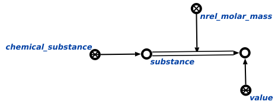

Команда вычисления молярной массы вещества предназначена для вычисления молярной массы вещества, поданного на вход данной команде. Аргуметом запроса является вещество, молярную массу которого необходимо вычислить. Результатом выполнения команды является вычисленная молярная масса вещества. Например:
